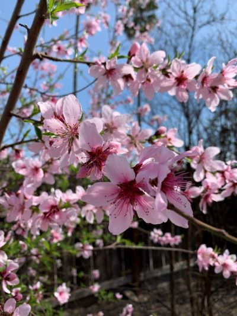
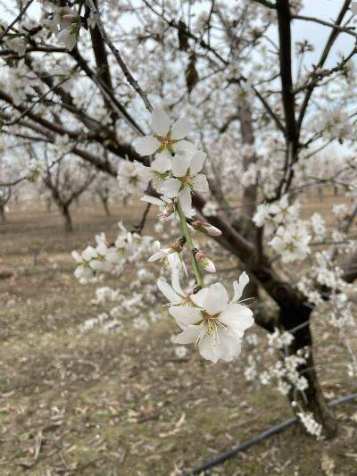
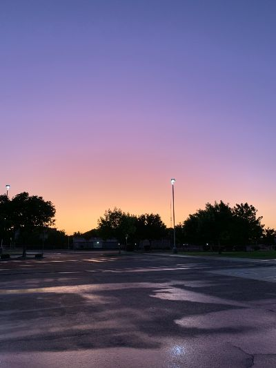
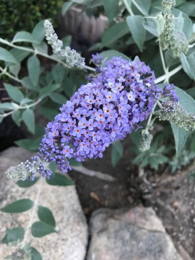

Local Photography Showcase

Peach blossoms in Denair, a suburb of Turlock

Almond blossoms abound in Turlock in the springtime!

The Central Valley displays the most stunning sunsets, like this one seen from a turlock parking lot.

This butterly bush released the most wonderful fragrance!
The Business Block
paid adsOur Purpose
Our purpose is to promote networking among local businesses and organizations to strengthen the success of the business community. We seek to highlight the unique characteristics of Turlock, California, provide historical and current information, and encourage visitors to come see how great Turlock is!
Join us!
Click here to join the Turlock Chamber of Commerce. We'd love to have you!
Contact Us
Email: info@turlockchamber.com
Phone: (209) 623-2221
Address: Central Park
115 S. Golden State Blvd.
Turlock, CA 95380


Upcoming Events
upcoming eventsCurrent Weather
Temperature:
℉
Wind Chill:
℉
Humidity:
%
Wind Speed:
mph
3-Day Forecast
| ℉ | ℉ | ℉ |
|---|